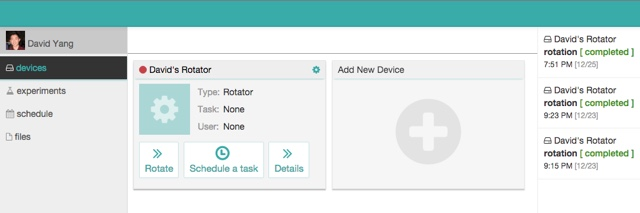

My roommate, Bryan Lin, was a researcher for a biotech at the time. He often had to dash to the lab at midnight to end experiments and turn off machinery.
This was medieval in my eyes: I lived in the world of automated builds and Jenkins. My natural inclination was to design a prototype that could make Bryan's life easier.
This was medieval in my eyes: I lived in the world of automated builds and Jenkins. My natural inclination was to design a prototype that could make Bryan's life easier.

One of Bryan's most common task was managing reagent mixing cycles.
I took a rotator used for mixing and connected it to an wifi-enabled arduino chip. The chip could toggle turn on/off the rotator.

I built a simple cloud service that enabled Bryan to manage the rotator anywhere with a wifi connection. I added the ability to schedule rotations in the same manner you create calendar events. Less lab trips for Bryan!